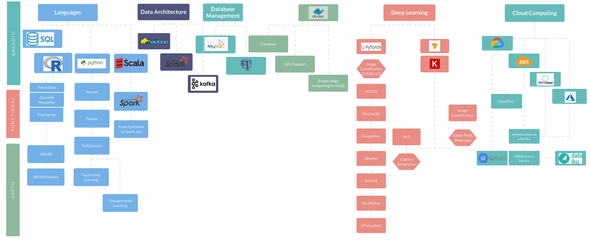

About Me
Hello! I've started this blog to highlight my background and interest in all things data science. The intent of this site is to show breadth and depth - inspired by a blog post which captured the qualities needed in a data scientist (and realistically could universally be applied to a number …
Hello! I've started this blog to highlight my background and interest in all things data science. The intent of this site is to show breadth and depth - inspired by a blog post which captured the qualities needed in a data scientist (and realistically could universally be applied to a number of other jobs and life goals). A person not only needs breadth in a given field (data science or fill in the blank) but also the deotg to proove fundamental understanding. It isn't much benefit to post a number of 'projects' which have been pre-filled by DS leaning websites, and an article can't capture the entire picture of a practitioner who's post involves the nuances between image augmentation in order to improve image classfication utilizing RESNET-18 architecture.
The hope and goal is to demonstrate breadth - composed of non-introductory examples sprawling across a number of topics related to the data scientist realm - with the fundamental understanding that the DS 'realm' isn't limited by a resume, job posting responsibility, background or knowledge, while also characterizing depth in a subset of those topics.

About Me:
I was fortunate to grow up in Colorado surrounded by a loving family that not only nurtured my childhood, but challenged me to push the bounds of what I believed possible. Skipping along a number of years composed of numerous sports, academic challenges, interest in the topics that challnged me - I graduated with a bachelors in Biological and Chemical Engineering and headed off to Pennsylvania in my first career job at Schlumberger. Here I was challenged to learn an industry I knew nothing about - and by nothing I acknowledge I had no clue what I would get myself into - failing my pre-test for the first 'school' (though I ended top of the class after taking it). I have been fortunate to see the oil and gas industry transform itself, emerging from the ~2008/2009 downturn to become more lean, while scaling with new-found shale resources.
Fast forwarding nearly a decade, I have learned a lot with the opportunities presented to me. The most transformational which set me on the data science track was the knowledge and improvements made simply by documenting my previous experience. This started with excel analysis of previous wells, recognizing where it was possible to push drilling parameters, and where it was most applicable to hold back. I wanted to improve upon this rudimentary analysis and set off to learn programming (python and R first) as well as data engineering (SQL database) to better understand and visualize the data. When this wasn't enough for my appetite to understand a complex problem (what's going on 2 miles down and 5 miles along a wellbore's path), I enrolled in the data science program at UC Berkeley.
Here I was introduced to a number of topics (breadth) and eventually given the opportunity to develop depth in specific aspects - most fortunately co-authoring a paper on image classification and the analysis of machine learning robustness to dataset. Co-currently I utilized my new found skills in order to address problems within the oil and gas domain. I have been fortunate to work on DS projects, developing automated scripts to collect and ensure data accuracy amongst the driling network across North America, while simultaneously utlizing machine learning algorithms to pinpoint drilling dysfunction and improve processes beyond what experience and imperitive programming can capture. Inspired by my domain knowledge in oil and gas I've also written a blog entitled From Bitumen to Binary which explores a data release from an oilfield in Norway - principally ingesting the many different data types, writing parsing scripts to inspect the dataset and beginning to understand what this data dump means.
I believe all opportunities are good ones, whether that's because we learn from them, or they generate new understanding in a given topic. I recognize the value I have recieved over the past near-decade in the oil and gas industry. Fortunate to apply data science methods to improve the data driven drilling decisions. Combining the data engineering and data science background from both UC-Berkeley and Oil and Gas I look forward to ingesting new topics, new challenges, and applying my current understanding while learning as much as possible about the numerous topis yet discovered in depth.
Depth & Breadth
This site contains a number of projects I have worked on which I can share publicly. The main image on the home page gives an indication of the technologies and data stacks I have experience with. UC Berkeley has granted me the opportunity to explore numerous realms of data science - from the scraping of data and attempting to clean it, to exploring the data and ultimately deriving insight from it. This end-to-end analysis has given me a respect for the numerous nuances in data exploration. Technologies that I have worked with in the pursuit of data anlysis include: Python, R, Scala, Spark, MapReduce, Docker, Kafka, Numpy, Pandas, PostgreSQL, MySQL, PyTorch, Keras, TensorFlow as well as cloud computing resources on GCP, Azure, AWS and IBM.
Having breadth and familiarity in these numerous topics, I further explored certain topics at depth to develop a further understanding. This depth projects are associated with image classification (pytorch), NLP (keras), statistical methods (R), wranging big data (Spark), machine learning algorithms (sci-kit learn). Principally the areas where I've explored a particular project at depth: - UC Berkeley: Image Caption Generation (Image Classification and NLP) - UC Berkeley: Machine Learning Algorithms - UC Berkeley: Dataset and Machine Learning Robustness (Image Classification applied to CIFAR-10). Publication link: [http://www.gatsby.ucl.ac.uk/~balaji/udl2020/accepted-papers/UDL2020-paper-101.pdf] (http://www.gatsby.ucl.ac.uk/~balaji/udl2020/accepted-papers/UDL2020-paper-101.pdf) - Oil & Gas: Data Management for North America Drilling (TB / day scale) - Oil & Gas: Analysis of PB data in order to determine inefficiencies in drilling process (ML algorithms & domain knowledge) - Oil & Gas: Automated detection of shock & vibration root cause (postgreSQL & BI tools)
Most fulfilling from my work in the data science industry has been working with experts in the domain and within data science to derive insight from a data dump or stream. I enjoy taking data that needs to be processed and handled in order to better understand the underlying trends or hidden stories and then communicating these stories.